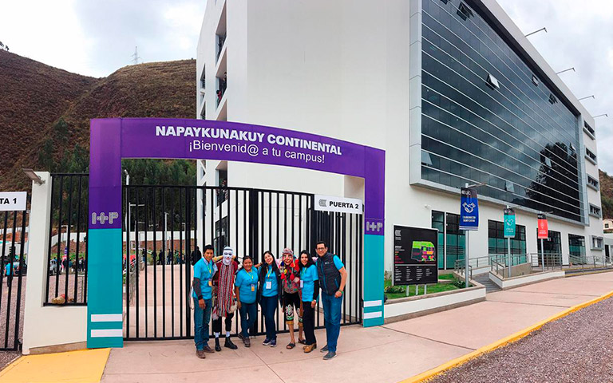
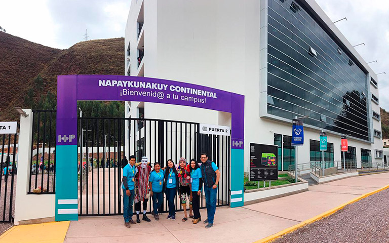

Asigantura: Construccion de Software
Participante: Johan Quispe Juarez
Correo: 75370096@continental.edu.pe
Universidad Continental
Imagenes de la Universidad Continental
Videos y geolocalizacion
 
